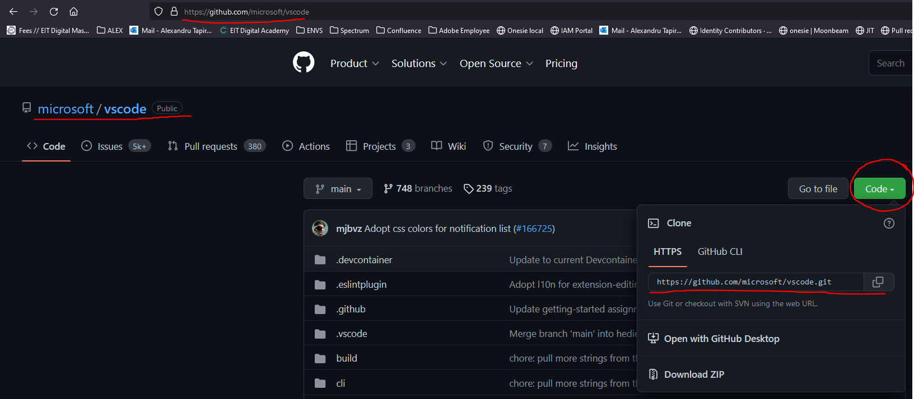
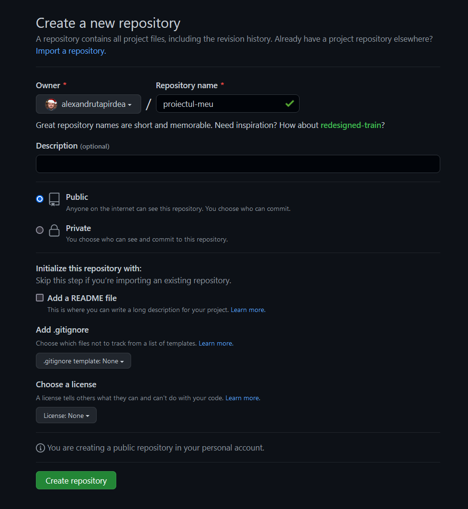
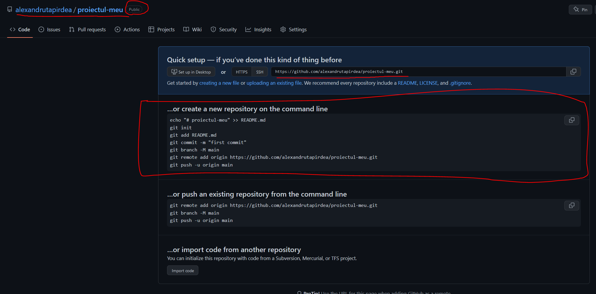
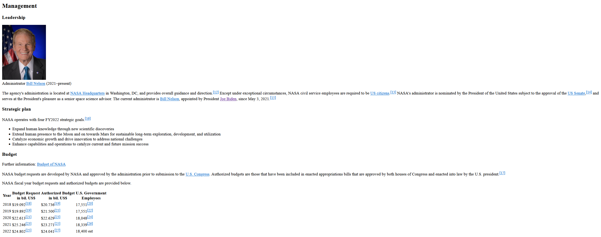
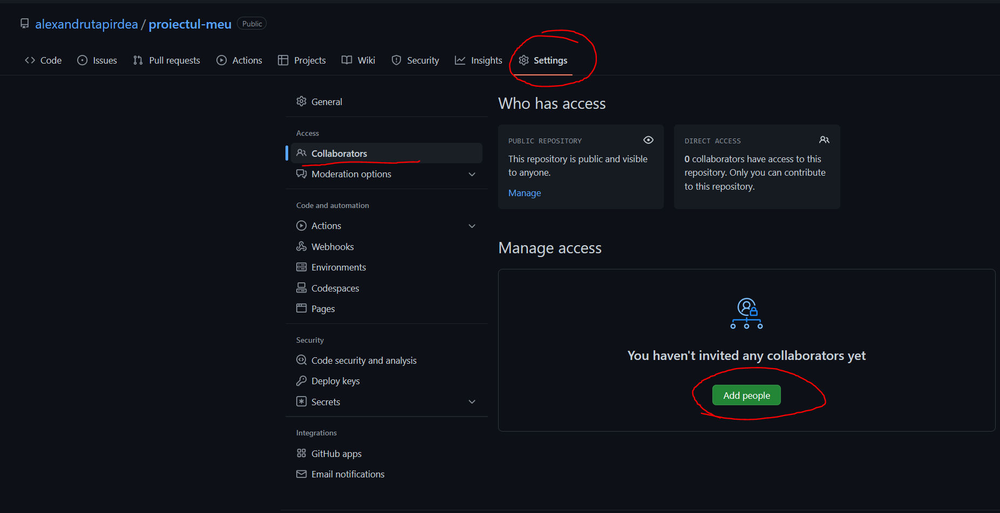

GIT & Github
Atunci cand mai multi programatori lucreaza la o aplicatie nu mai
putem sa ne tinem codul doar pe laptop-ul nostru.(pentru ca si alte
persoane vor sa-l modifice).
GIT este un sistem de versionare a fisierelor. Toate comenzile pe
care le invatam astazi sunt comenzi de git
Github este website-ul (interfata grafica) pe care il vom folosi.
Este locul unde sunt salvate fisierele.
Exista si alte site-uri pe langa Github care fac acelasi lucru, dar
sunt dezvoltate de alte firme. Github e detinut de Microsoft
Cele mai populare alternative la Github sunt:
Bitbucket
Gitlab
Noi o sa folosim Github
Github
Pentru inceput sa-si creeze toata lumea un cont.
Cum clonam un proiect ?
O sa clonam codul de la VSCode, editorul pe care l-am instalat in
primul curs:
VSCode Github Repository

vom rula git clone https://github.com/microsoft/vscode
Configurare username, email si parola pentru git
Vom deschide un terminal (putem si din vscode) si vom rula
Configurare username
git config --global user.name "your username"
Configurare email git config --global user.email "your email"
Configurare password
git config --global user.password "your password"
Cum facem un proiect nou ?
Prima data vom face un repository nou pe github

Prima data vom face un folder nou unde vrem noi
Deschidem un terminal(putem si din vscode) si rulam comenzile de pe
pagina de github. Puteti sa le luati cu copy paste

Hai sa vedem github in actiune:
-
Vom crea in folderul nostru un nou fisier HTML. Vom incerca sa
reproducem pagina urmatoare. Este pagina Wikipedia despre NASA.
Puteti lua textul cu copy paste de acolo
Link Articol NASA

-
Vom face un commit cu textul "Implementare design pagina NASA"
- Dam push la commit in repository
-
Vrem sa schimbam imaginea din pagina noastra HTML cu o poza cu o
girafa. Cautati ce poza vreti pe internet si faceti un nou commit
cu textul "Actualizare imagine". Dati push la noua modificare.
-
Clonati proiectul creat de alt coleg(vom pune link-urile in chat)
-
Nu puteti modifica alt proiect daca nu sunteti adaugi drept
colaboratori din setarile proiectului. Vom adauga acum alt coleg
colaborator.

-
Vom face un branch nou numit "numelePrenume/modificare-buget"(ex:
bogdanNitica/modificare-buget). Folosim comanda:
git checkout -b "numePrenume/modificare-buget"
-
Vom modifica cifrele din tabel cu vrem noi si dam push pe
branch-ul nostru
-
Vom face un Pull Request din interfata Github (prescurtat se
numeste PR). O sa mai auziti Merge Request(prescurat MR). Inseaman
acelasi lucru
-
Colegul vostru care a creat proiectul va aproba modificarea si va
face merge.
-
Dupa merge ne mutam pe branch-ul numit "main" si actualizam codul
nostru local folosind comanda:
git pull
-
Felicitari ! Asta este procesul prin care programatorii trec de
fiecare data cand modifica ceva nou in aplicatie.
-
De acum inainte pentru temele de acasa o sa folosim github.
Fiecare dintre voi o sa-si faca un repository nou numit
teme-curs-frontend. Pentru fiecare tema veti avea un branch nou
(il numiti cum vreti voi, de exemplu "tema-2") si creati un pull
request. Adaugati-ne pe noi(Alex, Bogdan) ca review-er din
interfata Github.